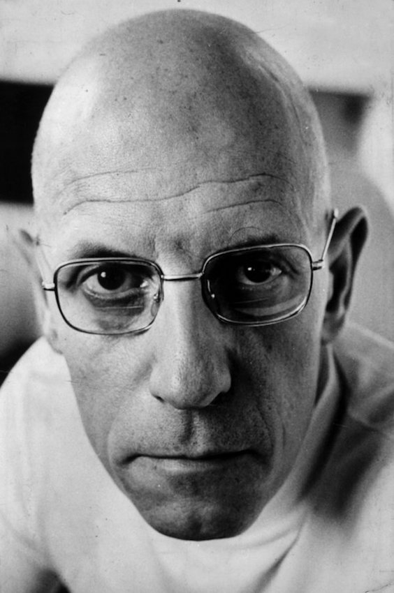
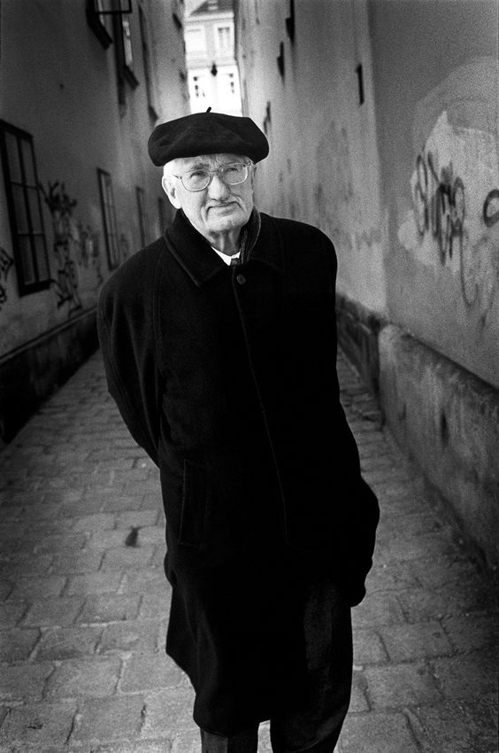
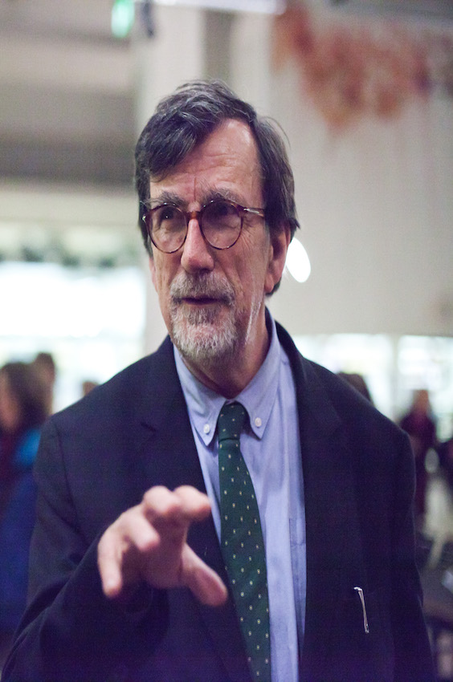

Enjoyed doing research in the field of social science but am now exploring programming!
|  |
Michel Foucault (1926-1984)While he might reject the label of Postmodernist, Foucault was certainly a lynchpin in the postmodern turn in anthropology, inspiring a paradigm shift in the way anthropologists think and write about the social worlds they study. His most important contributions include new ways of thinking about power and freedom. Methodologically, he also showed the potential in genealogy for revealing transformations in society and for shaking loose the taken-for-granted. Recommended Works: Discipline and Punish; Madness and Civilization; Nietzsche, Genealogy, History Keywords: Biopolitics; Genealogy; Discourse; Power |
|  |
Jurgen Habermas (1929- )Habermas wrote most prolifically on the state of the "public sphere" in contemporary society (advanced capitalism). His analytical approach revolved around rationality - more specifically, what he conceptualized as "communicative rationality". Whilst I find myself disagreeing with how he flattened social differences in his analysis, I find it useful to think about how his analyses would work together with contemporary anthropologists. Further, it is also interesting to think about how his theory could apply to a rapidly diversifying world where people of different cultures build bridging relations with each other. Recommended Works: The Structural Transformation of the Public Sphere; The Theory of Communicative Action Keywords: Modern; Public Sphere; Communicative Rationality |
|  |
Bruno Latour (1947- )Probably one of the most-cited thinker in postmodern Science and Technology Studies (STS). Latour writes prolifically on the objective-subjective divide and is usually referred to as the father of the Actor-Network Theory (ANT). My first exposure to Latour left me in awe. After four years of learning about the structures of society, Latour tore down all the assumptions of earlier theorists such as the distinctions between the nature and society, modern and premodern, human and non-human, redefining key ideas in sociology/anthropology such as agency. Whilst I am still unsure of how Latour can be effectively applied to social analysis, he is still one of my favourite theorists because of how he shook the fundamental assumptions I never knew I had. Recommended Readings: We Have Never Been Modern; Reassembling the Social Keywords: Postmodernity; Agency; ANT |